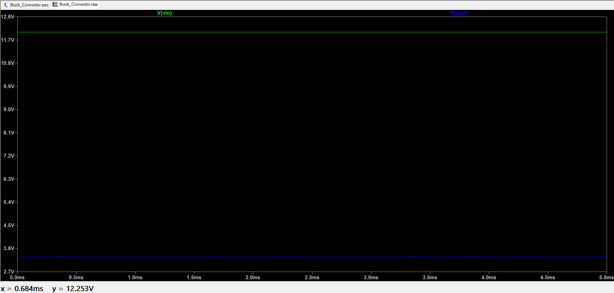
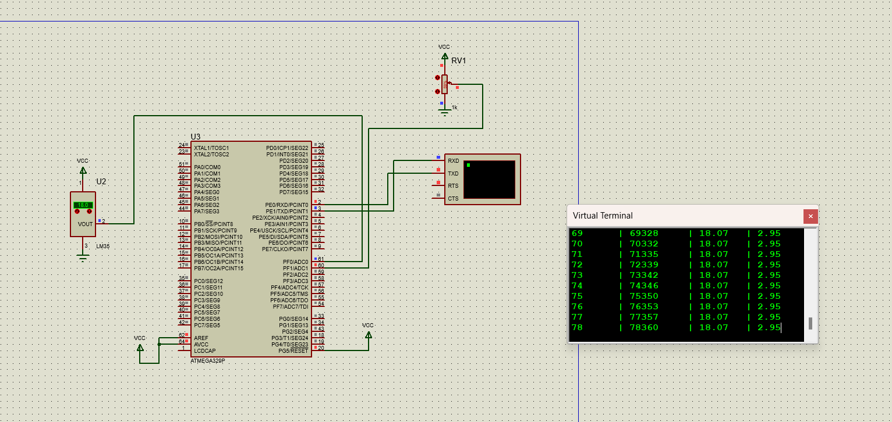

DETAIL 01
01. BUCK CONVERTER (12V→3.3V)
Synchronous step-down stage tuned for >92% efficiency and low output ripple under sensor load steps.
One engineer. Four subsystems. End-to-end telemetry from 12V bus to ground station.
Schedule of verified subsystem parameters (hover row to highlight on drawing):
| REF | PARAMETER | SPEC / VALUE | STAGE |
|---|---|---|---|
| A | PRIMARY BUS INPUT | 12.0 V DC | BUCK / KICAD |
| B | REGULATED LOGIC RAIL | 3.30 V (±1%) | LTSPICE / LDO |
| C | SWITCHING EFFICIENCY | > 92.4 % | LTSPICE |
| D | ADC QUANTIZATION | 10-BIT (4.88 mV) | PROTEUS |
| E | UART TELEMETRY STREAM | 9600 BPS / 1 HZ | ATMEGA329P |
| F | NOMINAL CARRIER FREQ | 437.0 MHZ (UHF) | MATLAB RF |
| G | SLANT RANGE (15° EL) | 1,450 KM (LEO) | ORBITAL GEOM |
| H | TRANSMIT EIRP | +1.35 DBW | MATLAB RF |
| I | RECEIVED Eb/N0 | 23.65 DB | AWGN MODEL |
| J | NOMINAL LINK MARGIN | +14.07 DB (PASS) | BER < 10⁻⁵ |
Adjust orbital range, carrier frequency, or bit rate to watch the downlink geometry and BER operating point re-draft live.
| EIRP | FSPL | G/T | C/N0 | Eb/N0 | BER | MARGIN |
|---|---|---|---|---|---|---|
| +1.35 dBW | 148.48 dB | -14.49 dB/K | 63.48 dB-Hz | 23.65 dB | 3.62e-103 | +14.07 dB |
| REV | PARAMETER DELTA | ENGINEERING NOTE |
|---|---|---|
| REV A | BASELINE ISSUE (437 MHz / 1450 km) | Initial 3U CubeSat UHF telemetry reference. |
Select any circular detail callout to inspect the underlying LTSpice waveforms, Proteus terminal captures, MATLAB plots, or KiCad schematics.
Synchronous step-down stage tuned for >92% efficiency and low output ripple under sensor load steps.
10-bit SAR conversion of LM35 thermal and bus voltage rails streamed at 9600 baud.
Analytical + Monte Carlo BER validation across UHF CubeSat, LEO S-Band, and GEO Ku-Band links.
Schottky reverse-polarity protection, 16 MHz crystal load network, and isolated AVCC/AREF filtering.
From SPICE power modeling to flight-ready hardware — M.Sc. Space Science & Technology, University of Bremen.
| PHASE / SUBSYSTEM | SCHEDULE BAR (WEEKS 1–14) | BUILDER'S BENCH NOTE |
|---|---|---|
| 01. POWER SIMULATION | 12V to 3.3V buck verified >92% efficiency in LTSpice. | |
| 02. EMBEDDED TELEMETRY | ATmega329P 10-bit ADC + 9600 bps UART packet stream verified. | |
| 03. RF LINK MODELING | MATLAB BPSK/QPSK link budget & App Designer GUI validated. | |
| 04. AVIONICS SCHEMATIC | ATmega328P-A sensor node schematic captured & ERC clean. | |
| 05. 2-LAYER PCB & GERBER | Active stage: ground plane pour, DRC & Gerber fab release. | |
| 06. HARDWARE BRING-UP | Bench probing, thermal drift calibration & RF range test. |
| PROJECT | TOOLCHAIN | STATUS |
|---|---|---|
| BUCK CONVERTER (12V/3.3V) | LTSPICE XVII | COMPLETE (>92% EFF) |
| ADC SENSOR INTERFACE | PROTEUS / AVR-C | COMPLETE (10-BIT UART) |
| RF LINK BUDGET ENGINE | MATLAB / APP DESIGNER | COMPLETE (LEO/GEO) |
| SENSOR NODE AVIONICS | KICAD 9 | SCHEMATIC COMPLETE |
B.E. Instrumentation & Control (Minor in Robotics) • Former Project Trainee at PRL / ISRO • M.Sc. Space Science & Technology (University of Bremen).
Verified >92% conversion efficiency and tight steady-state ripple regulation for avionics logic rails.


10-bit ADC sampling of LM35 temperature (18.07°C) and bus voltage (2.95V) streamed over 9600 bps UART.


Validated analytical erfc BER curves against Monte Carlo simulations and multi-orbit LEO/GEO test cases.

Complete ERC-clean schematic with 1N5819 reverse-polarity protection, AMS1117-3.3 LDO, 16 MHz crystal, and AVR-ISP/I2C/UART ports.